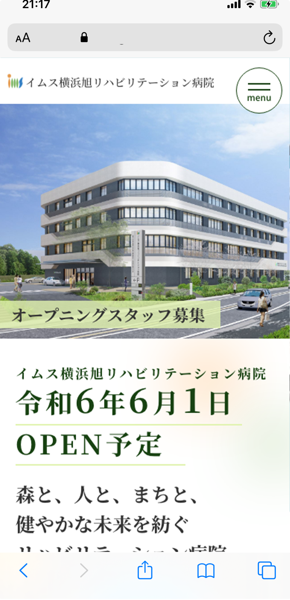
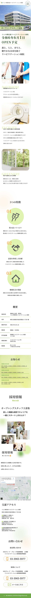

works
横浜旭リハビリテーション病院オープン前サイト



目的：新しくできる病院の初期情報を医療関係者・患者・求職者へ伝える、求人
ターゲット：医療関係者・患者・求職者
- 自然豊か・明るい・爽やか・親しみがあるイメージ
- 雰囲気、フォント、色などそれぞれ参考サイトを用意しイメージと合うものを調査し制作
ページ構成
- MV：ビジュアルをメインに文字は黒に緑を混ぜて写真の邪魔をせずかつ見えにくくならないように
- キャッチコピー：風が吹き抜けるイメージで優しいフォントに余白を特に広めに
- 採用情報：バナーでのご要望のため写真をランダムに配置、採用がメインのため高さを大きめに取り採用情報の文字も大きめに
- 環境：タイトルの後ろに英語表記を入れることでバランスをとっている、余白の有効活用
- ３つの特徴：番号を振り３つの区切りを明確に、アイコンにポイントとしてグリーンを入れている
- 概要：窮屈なイメージにしないため囲みのラインを無くし、thとtdをさりげなくグリーンのラインで区分け
- おしらせ：背景は新緑の写真をぼかしたものを使い、抜け感を出した
- 交通アクセス：マップの高さに右側の文字が収まるように３パターンの行き方を箇条書き
- お問い合わせ：オープン前で特に問い合わせが多いため背景色をつけ電話番号を大きく

point1
陽の光をイメージしたあしらい
point2
全体的に抜け感を出すため、余白は広め
point3
建設中で写真がまだ無いため、フリー素材を編集して使用
